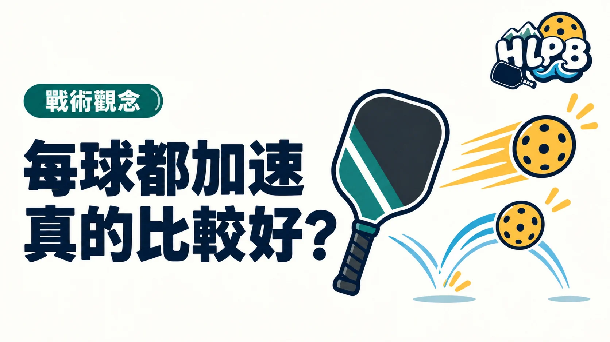

理解加速、慢球與重置的用途，避免只有一種擊球節奏。
把球打快，可能縮短對手的準備時間，也可能讓自己與搭檔更來不及反應。慢球則能爭取調整時間，但若高度與落點失去控制，也會給對手進攻機會。節奏不是只分用力或輕碰，而是知道這一拍希望替下一拍創造什麼條件。
這篇先談什麼
這篇談回合節奏。第三拍與重置球專題說明個別打法，這裡把它們放回整個回合，理解為什麼需要不同速度。
| 重點 | 怎麼理解 |
|---|---|
| 加速前先確認 | 看來球高度、自己的平衡與可控制落點，別把所有來球都當成進攻球。 |
| 慢球也要控制 | 注意高度與落點。慢只是速度，不能保證對手無法進攻。 |
| 留意下一拍 | 擊球後回到準備，和搭檔一起調整。不能只想這球打出去，不想下一球怎麼接。 |
快慢是工具，不是程度標籤。能依狀況選擇，比一直加速更值得練。
常見問題
慢球是不是比較弱？
不是。慢球可以用來調整位置與回合，但效果仍取決於控制與當下局勢。
加速後一定要往前衝嗎？
不一定。先評估球的品質與對手回應，再移動並停穩準備。
跟著影片看觀念
PrimeTime Pickleball 英文教材。觀察放短與抽球如何服務不同目的，避免把其中一種當成唯一答案。
來源與編輯說明
- https://primetimepickleball.com/3rd-shot-drop-vs-drive/
- https://primetimepickleball.com/how-to-hit-a-reset-shot-with-daniel-moore/
核對：2026/10/12。規則與教學觀念參考所列來源。閱讀排序與整理文字為 HLPB 編輯建議。
HLPB 編輯整理｜最後查證：2026-10-12